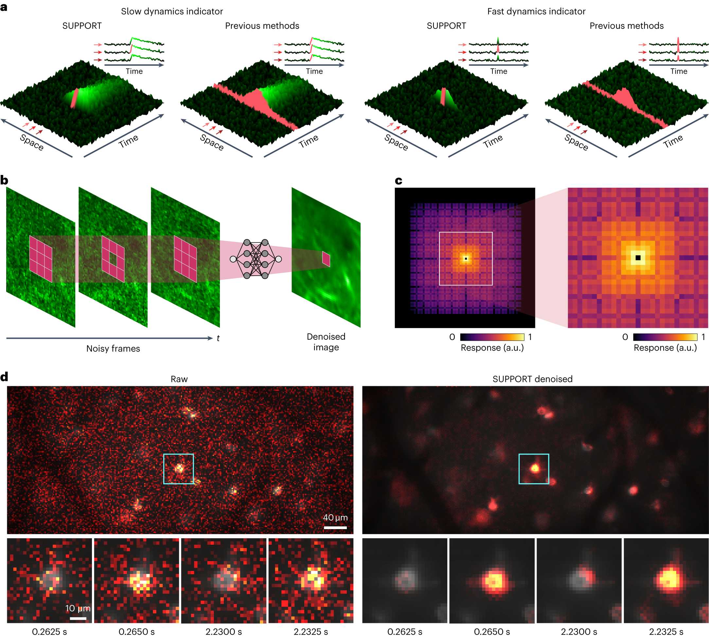

Our Science
Recovering neural signals
without clean training images.
Self-supervised methods for voltage imaging and fluorescence microscopy.
All researchLearning from the
recording itself
SUPPORT estimates each pixel using its spatial and temporal context while keeping that pixel out of the input. This design can recover fast events even when adjacent frames alone do not predict them well.
The work brings statistical assumptions into network design: which observations carry useful information, and which noise dependencies would bias a prediction?
Published study: Eom, Han, Park et al., Nature Methods (2023).
Read the paper
SUPPORT
From method
to experiment
The publication evaluates the method using simulations and experimental imaging data. Code and datasets are available through the original research project.
Multi-scale
blind-spot networks
The WACV 2025 paper examines design principles for multi-scale J-invariant networks. It connects the structure of a blind-spot model to the information available for self-supervised denoising.
WACV 2025 paperPublication recordHow can a noisy image teach a network?
A short visual explanation of the blind-spot idea.